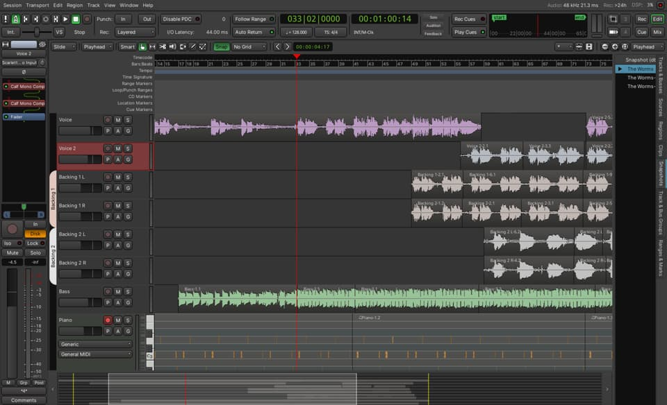
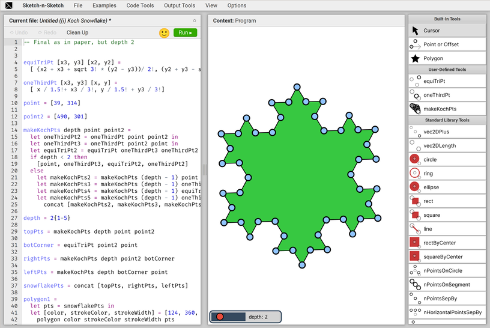

PAW: a programmable and visual audio workstation (submission to LIVE 2023)
This is an essay I wrote as a submission to the LIVE 2023 workshop, a workshop on live programming. You may also want to check out the talk I gave at LIVE based on this essay.
I also gave a follow-up presentation at the 5th AIST Creative HCI Seminar hosted by Jun Kato, alongside Tomoya Matsuura and Baku Hashimoto. I highly recommend Tomoya and Baku’s presentations.
Introduction
In this essay I’ll be presenting my ongoing project, whose working title is “PAW”, short for “Programmable dAW”. It’s an exploratory prototype of making a DAW where the project state is represented by a program, and a GUI is generated from code analysis of this program. PAW is based on my experience with traditional graphical DAWs, my experience as a programmer, and my interest in bidirectional and live programming.
If you don’t know about DAWs, here’s a primer. “Digital Audio Workstations” are an ubiquitous kind of software used by most artists to record, mix and produce music. A typical DAW presents the user with a skeuomorphic mixing table with “tracks” of audio and MIDI data (e.g., one for each instrument). The user can apply effects to these tracks (e.g., distortion, equalizer, delay) and mix them together. DAWs offer powerful GUIs to edit these tracks: for example, most of them have a “track editor”, where a user can arrange the position of audio and MIDI clips on the timeline of each track, to control when each clip is triggered during playback.

There’s another angle to making music on the computer, which is highly relevant to this project. Quoting Wikipedia, “live coding” is the practice of “making programming an integral part of the running program”. It’s often used in the context of music, where an artist is on a stage, writing a program (usually with a projector showing their code to the audience), while the program is being executed, producing music. This is not limited to audio, and you’ll also find visual artists doing the same with e.g. shader programs, to generate and animate graphics. Live coding lends itself especially well to generative art, where a small amount of code can produce intricate patterns, musical or otherwise.
PAW positions itself in-between these two approaches. Its roots are in live coding: the user is presented with a running program generating audio, and is invited to edit it live. However, using special syntax, they can specify literal values in the source code to be “interactive”, which produces a widget on a separate GUI window. Manipulating this GUI results in immediate changes to the audio signal, as well as “writeback” of the changed values into the source code. Here’s an example of PAW in action:
Here’s the plan for the rest of this essay. I will start by explaining the limitations I’ve encountered with traditional DAWs and live coding, and why I hope PAW can address some of them. Then I’ll show in more details how PAW currently works. I’ll move on to presenting similar projects in the programming and music spaces. Finally, I will conclude by exploring some of my ideas for new features and further improvements.
The trouble with DAWs
I started working on PAW after getting frustrated with my experience using traditional DAWs as a hobbyist. Most of that frustration has to do with managing complexity in the interface. DAWs are intricate pieces of UI, which take time to master. I must learn the usage model intended by the software designer, and then inevitably hit a wall and resort to “hacks” when my needs fall outside of this model.
This problem is the same as with many GUI-based software: graphical interfaces don’t compose very well, and so in order to offer the most “power” to the user, the software designers must incorporate a dedicated UI to account for every possible need. The result is that the number of features and the complexity of the interface scale at the same rate. It also means that users will still run into limitations imposed by the interface, despite its complexity. Finally, complex software is harder to get right and build a mental model for, which means both its designers and users will make mistakes in how they write and understand it, respectively.
If we look at programming, we see a different trend: the compositional nature of programs implies that a great deal of complexity can be expressed with a small set of primitives. Code is often not easy to write and understand, but it’s both a smaller and more expressive interface than a GUI. For example, many GUIs offer some abstraction capabilities: tracks can be linked together and share volume, the user-defined settings of an effect can be saved and reused, and so on. However, each of these is ad-hoc, has a different UI, and is limited to a specific context. Conversely, a program abstracts in more powerful ways that are consistent across contexts: any two values can be linked by using a variable, any piece of code can be re-used by making a function, and so on. This holds whether the code is an effect, a track, a whole piece of music, etc.
Not only are programming languages composable at the semantic level, text-based code is also modular in terms of its representation. A text file can be opened in the user’s favorite editor, it’s easy to version, conflicts are simple (or, at least, possible) to resolve. Because of this, source code is also easier to trust than a GUI’s inner state, and the user can have greater confidence that their project won’t change in surprising ways1. Strictly speaking, some traditional DAWs also benefit from this, since they too store their state as text files on disk (e.g., Ardour uses XML files). However, because these formats aren’t made with the intent of being read and edited by a human, doing so is difficult and error-prone.
Why isn’t live coding for music more widespread then? Well, there’s the fact that programming is not a particularly approachable discipline for most people. Putting that important problem aside, coding is also not a great medium to visualize things and think spatially. As I said before, live coding excels in generative music, because this is an area where programmability is a core feature, and a graphical interface is hard to design. In most musical contexts however, it’s important to be able to move bits of audio around, to visually adjust controls and hear immediate results, and so on. Even the simple act of changing a number feels clunky in a text editor, while it can be very natural when moving a slider with the mouse.
My hope is that, by using programming as its backbone, and filling the “visual gaps” of code with GUI, PAW can begin to provide a solution to the respective problems with these two approaches.
Presentation of PAW
PAW is implemented as a language server for a custom DSL. The user starts by opening PAW, which shows a mostly-empty GUI window. With their text editor of choice, they open a source file, and the editor connects to PAW via the language server protocol. Immediately, the program is compiled and PAW displays interactive widgets derived from static code analysis.
The user can now edit the program from their text editor. Like with other language servers, syntactic and semantic errors are displayed while typing. Saving the file recompiles the program and updates the interactive widgets.
The user can also manipulate these widgets, which too recompiles2 the program, and updates the source file in the text editor.
Atop the window is a play/pause button. When pressed, the program is run on an audio thread managed by JACK, generating audio. Changes to the interactive widgets are immediately reflected in the audio, just like a traditional DAW.
The DSL
PAW’s DSL is a simple imperative programming language compiled with LLVM. Its syntax is close to Lua’s, and its type system is similar to Elm’s. It was designed with the goal of being relatively fast and not garbage-collected, in order to be usable for sample-level audio programming.
Users can declare values to be interactive by wrapping them inside an
$interactive(...) expression, as follows:
let mute = $checkbox(true)In the example above, PAW would display a checkbox widget that has been
checked. Clicking on the widget would uncheck it, and change the source
code to $checkbox(false).
Interactive expressions can be parameterized as follows:
let volume = $slider(0.5)(0.01, 2.0)Which would display a slider with a current value of 0.5,
and a range of 0.01 to 2.0.
A track editor.
Such widgets can have arbitrary complexity. As mentioned above, a common feature of DAWs is the track editor, where horizontal tracks display audio and MIDI clips along the time axis. In PAW’s DSL, we represent audio and MIDI tracks as follows:
let guitar = {
-- Name of the track, used for recording
name = "Guitar",
-- Kind of track, currently either `#mono` or `#midi`
kind = #mono,
-- Clips in that track
clips = [
-- `src` is the audio file
-- `start` and `end` are a slice of that file, in audio samples
-- `location` is the offset on the track at which this clip is located
{src = "Guitar 001.wav", start = 1234, end = 5678, location = 0},
-- Another clip
{src = "Guitar 002.wav", start = 5678, end = 91011, location = 6000},
],
}Such a track can be wrapped inside $track(...) to make it
appear in PAW. The user can then drag the clips around and resize them, and
even record new clips.
Note that the track editor is quite limited, compared to most modern DAWs. As an example, it lacks the ability to import a clip from an existing file. However, because a PAW project is just a program’s source code, this missing feature is not a dealbreaker: there’s always the escape hatch of looking up the file name and manually adding it in the source.
This is the power of using code as a primary medium. Anything the user wants to do, they can accomplish—albeit sometimes with great difficulty. Therefore, PAW’s graphical syntax extensions need only to support operations where a GUI is critical for useability.
Similar works and inspirations
There’s a long history of augmenting programming with various forms of visual and interactive elements. I’ll now look into a few selected projects in that space, all of which have influenced my work, and compare them to PAW.
Program synthesis and Sketch-n-Sketch

My initial source of inspiration, Sketch-n-Sketch is a direct manipulation programming system for creating HTML and SVG documents. In Sketch-n-Sketch, the user writes code in a text area on the left-hand-side, and the output of their program, an SVG drawing, is displayed on the right-hand-side (see figure above).
Importantly, this output comes with signifiers, of the kind found in traditional SVG drawing applications. These allow the user to move, resize, and generally interact with the drawing. Doing so is immediately reflected in the source code by computing and applying a program transformation.
Those transformations are often non-trivial: where PAW requires you to specify exactly which literals in the program are interactive, Sketch-n-Sketch needs no such guidance. For example, when resizing a shape, it will go to great lengths to figure out exactly where that size was defined, effectively “running the program in reverse”, and apply the change there.
This approach does not translate directly to music, because the output, an audio signal, cannot (as far as I can imagine) lend itself to direct manipulation. Instead, some GUI acts as a proxy for direct manipulation of the output. This idea is explored by Mark Santolucito in “Human-in-the-loop Program Synthesis for Live Coding”, where the user can simultaneously interact with a graphical drum sequencer and the JavaScript source code it represents.
Compared to these projects, the logic behind PAW is relatively simple: it doesn’t do program synthesis, and interactivity is syntactically restricted to specify areas of the code. However, I don’t think this is necessarily a bad thing: because of it, PAW’s “mental model” is simpler to grasp, and the user has full control over what is interactive, and in which ways. Complex Sketch-n-Sketch programs generate equally complex nested layers of signifiers, and managing this sprawl is a major concern that PAW doesn’t suffer from nearly as much.
Hazel’s livelits and Andersen’s visual syntax
Probably the closest project to PAW, and another major source of inspiration3, is Hazel’s livelits. These are syntactic elements that expand to a literal, and which generate a GUI widget inside the Hazel editor for manipulating that literal. Livelits are “live”, meaning they generate closures that are re-evaluated as the GUI changes, in order to provide direct feedback of these changes. They are also composable: livelits can embed text fields which may contain any Hazel source code, including other livelits. They can be user-defined and partially applied.
Unlike PAW, livelits are embedded inside the editor, hiding the actual literal they represent. At runtime, they are expanded like a macro, whereas PAW’s interactive literals are “pass-through” (there’s no expansion), which simplifies type checking a little. It also means any existing literal can be made interactive, and any interactive literal can be made static again, without semantic change to the program. A trade-off is that some literals (e.g., the tracks) can end up taking a lot of space in the source code, for little value.
In her paper “Adding interactive visual syntax to textual code”, Leif Andersen approaches this space from a different angle. Her work focuses on creating syntax extension (aka, macros) for the Racket language, which expand to visual interactive widgets directly in the code editor, DrRacket. Where traditional macros are “compile-time”, Andersen’s visual syntax are “edit-time”.
A major difference from livelits is that they lack the “live” element. They are implemented as a compiler pass which is executed in the editor, and the code they produce is static. In that sense, they are “editor extensions”, not directly connected or affecting the execution of a running program.
In its current form, PAW is closer to Andersen’s work than to livelits. The semantics of PAW’s interactives is that they modify the source code itself, and don’t affect running programs. It just so happens that audio processing requires running a signal processing function in a loop, which means it’s easy to hot-swap one program for another between two function calls, giving the impression of liveness.
Faust
Unlike the previous works I discussed, Faust is not a bidirectional programming project. Instead, it’s a programming language and development environment for sound synthesis and audio processing.
Faust has a large library of digital signal processing functions, which users can connect together to form audio processing graphs. Being purely functional, the language lets users write such programs in a declarative way. It’s vastly more rich and usable than PAW’s DSL, and a great source of inspiration for further improvements to the language.
Notable for the context of this essay, Faust includes a GUI library to make programs interactive. Here’s an example, which produces three sliders for controlling an audio filter:
import("stdfaust.lib");
ctFreq = hslider("cutoffFrequency",500,50,10000,0.01);
q = hslider("q",5,1,30,0.1);
gain = hslider("gain",1,0,1,0.01);
process = no.noise : fi.resonlp(ctFreq,q,gain);However, unlike PAW and other similar projects, these widgets are not based on code analysis and synthesis: it’s a domain-specific library for writing GUIs for audio plugins.
The Roc programming language
Finally, in terms of both PAW’s structure and its DSL, a major source of inspiration has been the novel Roc programming language, which is an extension of the model of Elm and its famous architecture. Roc is a work-in-progress programming language for writing applications in which the domain-specific complexity is abstracted away into a “platform”, which is written in some other language (Rust, C, etc.), and users of a platform get to write their application in the simpler Roc language.
PAW’s architecture is similar to Roc’s: the “platform” is a Rust audio processing environment, and the “application logic” is a separate program in a specific DSL, authored by the user. Interestingly, the Roc team has plans for a language-specific editor which could support code-generated interactive UI, meaning one day PAW could be implemented as a Roc platform.
Future plans
My current short-term goal is to get PAW to a state where I feel comfortable using it for (at least some of) my music composition and production. To that effect, I’ve been iterating on PAW, its DSL, and its audio library. In its current shape, the project is still quite rough on the edges, but I’m hoping to finish ironing out the most glaring kinks in the coming months.
Once I feel reasonably comfortable with the stability and usability of PAW, I’d like to get other users to try it, receive feedback to improve the project, and (in)validate some of my hypotheses. My target audience is going to be artists familiar with programming, although I’d love to get to a point where it might be approachable to non-coders. I’m not sure whether this can be achieved in PAW’s current form.
In the longer term, I’m also particularly interested in pushing forward the expressiveness of this system. To that effect, I have several ideas for future improvements, which I’ll detail below.
Language improvements
The PAW DSL currently leaves a lot to be desired. Being very young, the language is still a bit broken, hard to debug, and not always pleasant to use. It also suffers from complex and sometimes conflicting requirements: because I’m aiming to write as much as possible in this one language, the DSL needs to be able to handle low-level, performant audio processing code, as well as the higher-level structural code connecting parts together.
So far, this has lead me to making the DSL mostly imperative, but I’m hoping to move closer to a functional language in the future. Recent developments, such as automatic memory management with Perceus, might be helpful to achieve high performance while being safer and more declarative.
Embedded text editor
The current setup of using an external editor connected to PAW through the LSP was mainly chosen so I wouldn’t have to make a whole text editor, which would further blow up the scope of this project4. While it does have the advantage of letting users choose their text editor, I don’t love this split between the code and the GUI it induces. In the future, it might be worth looking into embedding an editor directly into PAW, which could display widgets inline like livelits.
Some text editors, like Vim and Kakoune, can be used in a client/server fashion, where a client sends keypresses to a server and receives text to display. PAW could embed such a client into a text area, turning it into a powerful text editor with very little effort.
Bespoke widgets written in the PAW DSL
Currently, all interactive widgets are hard-coded into the Rust runtime. A major long-term goal for PAW is to let users write their own widgets directly in the PAW DSL, such that they may be packaged alongside libraries to provide domain-specific UI.
Here’s a tentative example of writing a custom checkbox widget, in an immediate GUI style:
fn checkbox(ctx: GuiContext, checked: Bool) -> Option<Bool>
let rect = {width = 20.0, height = 20.0, x = 0.0, y = 0.0}
-- Draw the outer square
rectangle(ctx, rect, WHITE, BLACK)
if checked then
-- Draw an inner square if checked
let rect = {width = 16.0, height = 16.0, x = 2.0, y = 2.0}
rectangle(ctx, rect, WHITE, WHITE)
end
-- Handle interactions
if clicked(ctx, rect) then
-- Value has changed
#some(!checked)
else
-- Nothing to declare
#none
end
endNote that, unlike a macro, this function does not take an AST as input, and instead accepts the actual typed literal value. This is possible because PAW’s interactives are “pass-through” and don’t do any syntax expansion. Whether doing expansion is desirable in this context is unclear to me. Macros can be powerful, but they also obfuscate the actual value in the code, and they make type checking trickier.
Code for these widgets is not relevant to the actual audio runtime of PAW, and conversely audio processing code is not needed for the GUI. Therefore, the two should ideally be separated in both their scoping and their compilation targets. Racket’s phase system looks to be a good solution to this problem—it’s indeed the one used by Andersen in her “visual syntax”, mentioned above.
Improve the syntax for interactive expressions
My experience with the current interactive expressions is that they are
quite heavy in terms of syntax. The user is asked to specify what needs to
be interactive, the widget to use, and the parameters to apply. To
illustrate, here’s a simple low-pass filter which is applied to a sample.
The filter is parameterized by two values, f and
q, which are interactive:
let params = {
f = $slider(0.85)(0.0, 0.99, "log"),
q = $slider(0.35)(0.0, 0.99),
}
let sample = lp_apply(lp_state, params, sample)The filter misbehaves if either of these parameters is outside
[0.0, 1.0), so it’s important to set the bounds of the sliders
properly. Unfortunately, the syntax for this is heavy, not DRY, and
error-prone.
An option I’m looking into is to infer as much as possible from the type
of expressions. Here, f and q’s types are
inferred from lp_apply’s, which is Fn(&LpState, {f:
F32, q: F32}, F32) -> F32. We could imagine extending the type
system with extra information that gets carried by type inference. For
example, we could change the type of params to be {f:
F32[min=0.0, max=0.99, scale="log"], q: F32[min=0.0, max=0.99]}. The
code snippet above becomes:
let params = {
f = $slider(0.85),
q = $slider(0.35),
}
let sample = lp_apply(lp_state, params, sample)If a user wants to further restrict the range of allowed values, they can do so with a type annotation:
q = $slider(0.35 : F32[min=0.1, max=0.9])Coming back to the issues raised above, the user still has to choose the way in which they want a value to be interactive. Here the widget is a slider, but it could also make sense to use rotating knobs for space efficiency, or even in some cases a bare text input that parses a number. Regardless, it’s common to use the same kinds of UI elements for the same types of value, because it makes the UI consistent. Therefore, we could decide to just say “make this value interactive”, and let the exact widget be inferred from the type alone:
let params = {
f = $0.85,
q = $0.35,
}
let sample = lp_apply(lp_state, params, sample)The user might want to change the widget used for a given type in a specific context. For that, we could have a syntax that acts as a “context switch”, signaling that we want to change the default widget within a given scope.
At this point, this is starting to look an awful lot like Haskell’s type classes or Rust’s traits—with one quirk: here, we are able to declare multiple instances/implementations of a class/trait for the same type, and choose the one to use for each scope. There are issues with this, which is why Haskell and Rust don’t support it. However, it can be done in a sound way, see for example Controlling the scope of instances in Haskell by Gontijo and Camarão.
Building on this idea, let’s envision a trait syntax for PAW’s DSL, and write a trait for interactive literals:
trait Interactive
fn show_widget(GuiContext, Self) -> Option<Self>
endThis trait has a single function, whose signature is based on the previous section’s widget functions. Again, it would only need to exist inside the “editor phase”.
A benefit of this approach is that it enables straightforward
composition of interactive literals in a generic way. Continuing on the
same example, we could establish that records themselves implement the
Interactive trait whenever all their fields do. The
implementation of show_widget would then display each field’s
name as a label, alongside a call to that field’s type’s
show_widget. We could then rewrite the example as:
let params = ${
f = 0.85,
q = 0.35,
}
let sample = lp_apply(lp_state, params, sample)and it would group the low-pass filter’s parameters together, display them as sliders (if these are the defaults in scope), and label them with “f” and “q”.
Generic track editor
I’ll conclude with an application of the concepts introduced in the previous sections, in order to make a generic track editor. This, I believe, illustrates well how the composability of programs can translate to GUIs, increasing their modularity.
Currently in PAW, the track editor is built around audio clips, which
are just WAV files. But a “clip” is actually a pretty generic concept: it
is an interface with a “get data at sample location s”
operation. More formally, using the previous trait syntax:
trait Clip<t>
fn sample_at(Self, Sample) -> Option<t>
endwhere t is a universally-quantified type variable. Given
this, WAV clips are defined as:
data WavClip { src: String }
impl Clip<F32> for WavClip
fn sample_at(self: WavClip, s: Sample) -> Option<F32>
read_wav_file_at(self.src, s)
end
end
impl Interactive for WavClip
fn show_widget(ctx: GuiContext, clip: WavClip) -> Option<WavClip>
-- Show the waveform
-- [...]
-- Not actually interactive: moving and resizing the clip is handled by
-- the track widget.
#none
end
endHere’s a different example of clip with the same output type, a “sine wave clip” that generates a sine signal with a given frequency:
const SAMPLING_FREQ: F32 = 48000.0
data SineClip { freq: Float }
impl Clip<F32> for SineClip
fn sample_at(self: SineClip, s: Sample) -> Option<F32>
sin(2.0 * PI * to_f32(s) / SAMPLING_FREQ * self.freq)
end
end
impl Interactive for SineClip
fn show_widget(ctx: GuiContext, clip: SineClip) -> Option<SineClip>
-- Show a sine wave
-- [...]
-- Show a number input to change the frequency
-- [...]
end
endTracks are an array of clips, but they also need to store the position of each clip on the timeline, as well as the “slice” of that clip which is used in the track. We get the following:
type alias Track<t> = [TrackClip<t>]
data TrackClip<t> = forall c: Clip<t>. {
clip: c,
start: Sample,
end: Sample,
location: Sample
}Here we’re adding more new syntax. forall c: Clip(t) is
borrowed from Haskell’s existential types, and works similarly to Rust’s
trait objects (dyn Trait). It makes TrackClip
generic only on the output type of sample_at, and not on the
type of the clip itself. This means a track can contain heterogeneous
clips, as long as they all produce the same type when sampled.
Tracks themselves are sampled by reading from each clip in turn, until one returns a result for the given sample:
fn sample_track_at(track: Track<t>, s: Sample) -> Option<t>
for clip in track do
if clip.location <= s && s < clip.location + clip.end - clip.start then
-- If the sample is in bound, read data from it
let out = sample_at(clip, s - clip.location + clip.start)
if is_some(out) then return out end
end
end
#none
endA track implements Interactive by iterating over its
visible clips, restricting the viewport to the clip’s size on the timeline,
and calling the clip’s show_widget implementation. For this we
also need to extend the trait bounds on TrackClip to require
Interactive:
-- 👇 new stuff
data TrackClip<t> = forall c: Clip<t>, c: Interactive. {
-- [...]
}
impl Interactive for Track
fn show_widget(ctx: GuiContext, track: Track) -> Option<Track>
for clip in track do
-- The rectangle covered by the clip in the timeline
let clip_rect = -- [...]
if rect_is_in_viewport(ctx, clip_rect) then
-- Handle move and resize events
-- [...]
-- Show and interact with the clip's inner widget
let ctx = restrict_viewport(ctx, clip_rect)
let clip_result = show_widget(ctx, clip.clip)
if is_some(clip_result) then
-- Clip has changed, pass this up to the calling context
-- [...]
end
end
end
end
endNow the track widget will display any Interactive clip,
allowing the user to move and resize them, and passing other events through
to the clip’s own widget. Users are free to define new types of clips by
implementing traits, and these will immediately be supported inside the
track editor widget.
It’s interesting to note that, since sample_track_at has
the same signature as Clip’s sample_at,
Track itself could be made to implement
Clip5. This means a track could have
fully-functioning nested tracks as its clips. Whether this is actually
useful is left as an exercise to the reader.